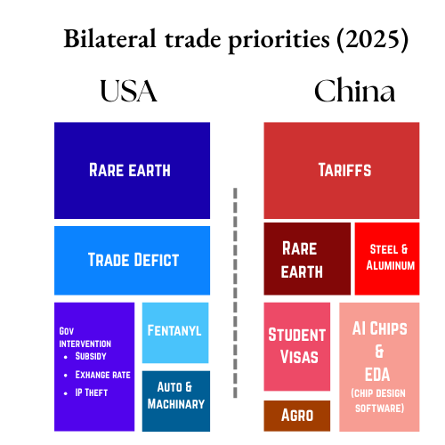

US-China trade summary (2024)
In 2024, US goods imports from China reached ~$438.9 billion, comprising ~13.3 % of total US goods imports (~$3.3 trillion). ~14.7 % of China’s total exports in 2024 were destined for the US. US goods accounted for ~6.3 % of China’s total imports in 2024. US goods exports to China were $143.5 billion, representing ~7.0 % of US total merchandise exports; including services, bilateral trade exceeded $580 billion.
US- China Trade: Key sectors
China → US Goods: Electrical machinery & equipment (~24 %), mechanical appliances (~17.6 %), furniture (~6%), toys (~5.1%), plastics (~4.5%); these categories make up ~57% of exports
China → US Services: Import data sparse, but includes US financial, education, and business services.
US → China Goods: Mineral fuels/oils (~14.02 %), machinery (~12.1 %), electrical equipment (~11.1 %), optical instruments (~7.8 %), oil seeds (~7.7%)
US → China Services: Includes travel, education, business services; China runs consistent services deficit with US
Note that the value of an item for the economy might not always be represented by the trade volume of an item. Sometimes, items that form a big chunk of an import might play a smaller role in overall economic impact and vice-versa.
Negotiation timeline
January 2025: USTR initiates compliance review under Phase One of the negotiations, targeting overcapacity & IP failure claims.
Feb 1: US launches fentanyl-specific tariff (10%) via executive order; signals escalation.
Feb–March 2025: Escalating tariff rounds; US imposes up to 145%, China retaliates on coal, LNG, soy, timber (~125%).
April 2025: USTR initiates new IP and 301 investigations; China rolls out stimulus and expansion of Export controls on rare-earths & tech firms.
Active Tariffs
• US : General 145% ; 25% autos; 20% fentanyl items
• China : 125%; major US exports heavily restrictedMay 2025: Negotiated tariff truce begins—US reduces to ~30%, China to ~10% for 90 days, expiring Aug 12.
Active Tariffs
• US: 30% General; 50% on copper goods (Aug 1)
• China : 10%; critical US goods (agriculture, tech, energy)Late Jun–Jul: Stockholm ministerial talks sought to extend truce; US and China airing political cues for potential Xi–Trump meeting.
July 2025
July 30: Trump expresses conditional optimism about a “very fair deal” with China, contingent on progress before Aug 12 deadline.
Active Tariffs
• US: 30% (general), 50% (copper products from Aug 1)
• China: 10%; continued restrictions on US companiesAugust 2025
August 11: Trump extend the US–China tariff truce by 90 days (until November 10). Both sides agree to keep tariffs capped at 30% for US duties on Chinese imports and 10% for Chinese duties on US goods, maintaining critical supply chain stability as US importers stock up for year-end.
The announcement sparked market relief, with both nations signalling readiness for continued negotiations. The extension is seen as paving the way for a possible Trump–Xi summit later in the year.August 12: The ceasefire deadline was formally extended by both governments. Issues of earth supply chains, chip sales, TikTok’s ownership, and oil import regulations (Iran and Russian imports to China) become core points.
US government allows Nvidia and AMD’s AI chip exports to China, including Nvidia’s H20, for an export tax of 15%.
Active Tariffs
• US : 30% most goods; 50% copper-intensive goods; 10% on certain allowed exceptions (like AI chips for a fee)
• China : 10%; targeted bans/restrictions on US technology, energy, and agriculture
• If truce lapses (after Nov 10): US tariffs jump to 145%; China to 125%September 2025
Sept 12: 23 Chinese companies are added to the U.S. restricted trade list by the Department of Commerce.
Sept 13: China launches an anti-dumping investigation into the analogue integrated circuit chip imports from U.S. and opens an anti-discrimination probe into U.S. measures targeting China’s chip sector.
Sept 17: China’s Cyberspace Administration orders Chinese technology firms, including ByteDance and Alibaba, to halt testing of Nvidia’s RTX Pro 6000D amid tighter chip controls.
Sept 29: U.S. includes the “Affiliates Rule” to its Entity List that automatically including subsidiaries that are at least 50% owned by listed entities.
Active Tariffs
• US: 30% most goods; 25-50% on steel, aluminum, copper-intensive goods, and automobiles; expanded Entity List 3,163 Chinese entities.
• China: 10% retaliatory tariff on all US goods; 15-25% on US metals and steel; 2.5-25% on agricultural products, LNG, automobiles, chemicals, and electronics; increasing chip controls.October 2025
Oct 9: China introduces licensing requirements for “specific export operators” exporting or re-exporting rare earth materials.
Oct 10: Trump announces 100% tariffs on Chinese imports and new export controls, effective 1 November, citing China’s expansion of rare earth export restrictions.
Oct 14: China imposes sanctions on five U.S.-linked subsidiaries of South Korea’s Hanwha Ocean, citing national sovereignty and security concerns. The move responds to U.S. port fees on China-linked vessels and triggers market disruption and diplomatic tension.
Oct 30: Trump and Xi meet at APEC summit resulting in:
- The U.S. cutting 10%. fentanyl tariffs on China
- China adjusts tariffs on select U.S. goods.
- China suspends rare earth export restrictions for one year.
- The U.S. pauses expansion of its Entity List for one year.
- The U.S. suspends its 24% reciprocal tariffs for one year.
Active Tariffs
• US: 30% most goods + additional restrictions
• China: 10% retaliatory tariffs + export controls
• APEC summit deal to come into effect from NovemberNovember 2025
December 2025
January 2026
Jan 6: Administration policy outlines reaffirmed China as the principal long-term tariff and trade adversary, with negotiators authorised to use selective rather than blanket tariffs.
Jan 14: President issued directives under a national-security framework on processed critical minerals and downstream products, explicitly identifying China-linked supply chains as strategic vulnerabilities.
Jan 16: U.S. officials stressed that while no immediate across-the-board tariffs were imposed, tariff ceilings and quotas remained active policy tools for minerals, EV inputs, and advanced tech goods.
Jan 18: Market and policy analysts interpreted the minerals action as a preparatory step for future tariff escalations rather than a standalone measure.
Jan 20: China-focused commentary concluded the January posture marked a shift from trade war optics to persistent tariff management tied to technology denial and supply-chain re-engineering.

Understanding USA’s Priorities
United States of America would strongly aim to further its ‘America First’ approach with the twin aims of enhancing US market access to the Chinese markets, fastest growing market in terms of growing per-capita income of Chinese citizens in the last decade. US would also like this opportunity to call out on Chinese IP theft, and currency manipulation allegations. Trump administration would view these negotiations as the most important part of his electoral promise and Presidential agenda especially considering the bipartisan consensus on an anti-China approach on both strategic and more importantly geo-economic issues.
Priorities
- China’s high tariffs & NTBs → USTR criticized duties on US agriculture, auto, and tech sectors; part of public negotiation pressure
- Rare-earth export controls → Chinese restrictions on critical minerals led to supply-chain security concerns
- IP theft & forced technology transfer → USTR’s 2025 Special 301 placed China under high scrutiny for IP enforcement
- Fentanyl-related & reciprocal tariffs → Executive orders led to tariffs up to 145% against Chinese goods, triggered US “national emergency” rhetoric
- Sectors like autos, pharma under threat → Additional threatened tariffs on these sectors raised stakes in high-tech competition negotiations
- Overcapacity concerns & maritime edge → US blamed China’s state-led overcapacity in steel, shipping, logistics as distortive trade leverage.
Understanding China’s Priorities
China has been anticipating Trump administration’s aggressive approach and hopes to leverage its Rare Earth exports, market access and larger strategic posturing to negotiate the impending crisis.
Priorities
- Opposition to triple‑digit US tariffs → China filed WTO complaints and strongly condemned tariffs as coercive strategy
- Retaliatory duties on US goods → Imposed up to 125% tariffs on US agriculture, machinery, added firms to unreliable entity list
- Resistance to US demands on curbing Russian/Iran oil imports → Reasserted strategic autonomy; refused linkage between trade access and energy diplomacy
- Invest in domestic stimulus & decoupling resilience → Shift toward internal demand and new industrial tech (EVs, high-end manufacturing).
References
- https://edition.cnn.com/2025/08/11/china/us-china-trade-nvidia-chips-intl-hnk
- https://time.com/7292207/us-china-trade-war-trump-tariffs-timeline/
- https://www.weforum.org/stories/2025/06/trumps-us-china-trade-tariffs-timeline/
- https://www.congress.gov/crs_external_products/IF/PDF/IF12125/IF12125.6.pdf
- https://moneyweek.com/economy/global-economy/us-china-trade-decoupling
- https://www.theguardian.com/business/2025/apr/05/china-needs-friends-in-trumps-trade-war-but-xi-may-have-to-go-it-alone